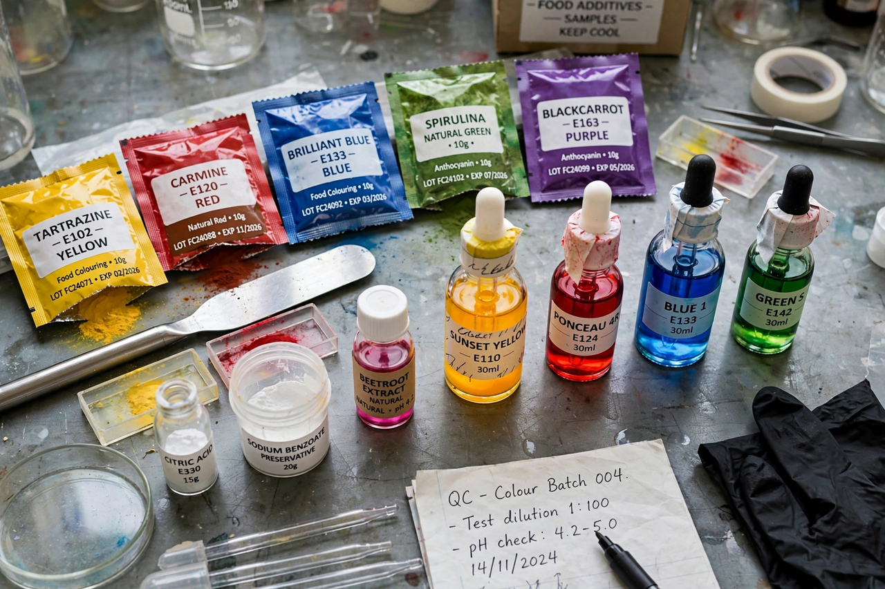

Food additive
From Wikipedia, the free encyclopedia

Food additives are substances added to food to preserve it, colour it, flavour it, sweeten it or give it texture — from ancient salt, smoke and vinegar to the several hundred regulated additives of the modern food supply, listed in the EU by E number and in the US under FDA rules (many as "generally recognised as safe", GRAS). The main families are preservatives (nitrites that keep cured meats safe from botulism), antioxidants, colours, sweeteners, emulsifiers such as lecithin, thickeners, and flavour enhancers such as MSG.
Discoveries and controversies
Several landmarks came by accident: saccharin (1879), noticed as a sweet taste on a chemist's unwashed hands after coal-tar research at Johns Hopkins, became the first artificial sweetener; aspartame (1965) was found the same way, a chemist licking a finger to turn a page. MSG — isolated in 1908 by Kikunae Ikeda as the taste of umami and sold as Ajinomoto from 1909 — was dogged from 1968 by "Chinese restaurant syndrome", a complaint later studies largely failed to substantiate and now read as a case study in food xenophobia. The Southampton study (2007) linking certain colours with children's hyperactivity led the EU to require warning labels on six colours while the FDA declined to follow.
Regulation
Modern additive law grew from 19th-century adulteration scandals (alum in bread, lead chromate in sweets) and the US Delaney Clause (1958), which banned any additive shown to cause cancer in animals — a rule that has forced cycles of bans, exemptions and reformulations, red dyes being the perennial example. The modern "clean label" movement presses manufacturers to swap named additives for ingredient-sounding alternatives (cultured celery juice, remarkably, delivers the same nitrite as the synthetic cure it replaces) — an arms race between chemistry, law and marketing.